UT Austin's VEX U robotics team

We are an open, competitive VEXU team featuring a fun, open environment where team members are able to learn and compete in VEXU!
We don’t just do well in competing, we’re also pushing the boundary of VEXU and robotics, whether that be mechanical development in swerve or our advanced lidar stack. We compete in two competitions: VEXU and VEX AI.